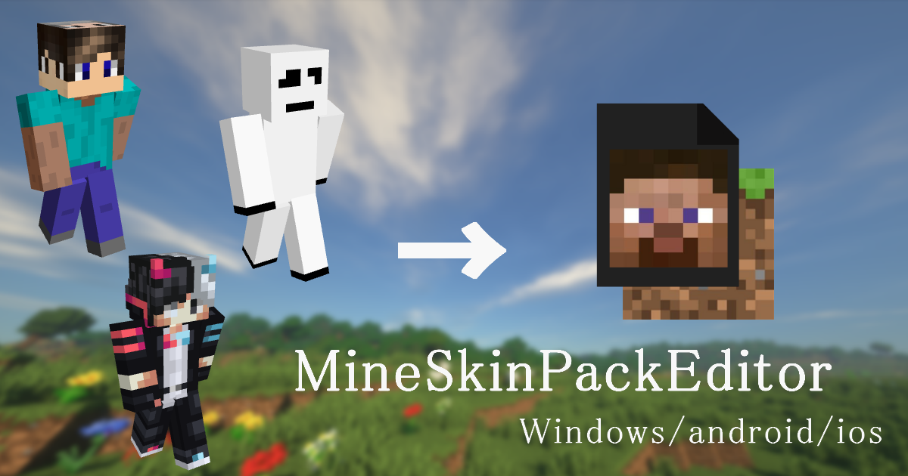

使い方
MineSkinPackEditorは、Minecraft統合版で使用できるスキンパックを簡単に作成できるツールです。
以前にC#でこれと同じのを作成した際にスマホでも使ってみたいって言う声があったので作成してみました。
以下の手順に従ってスキンパックを作成できます
- まず、スキン画像を選択してください。画像形式は.pngが望ましいです
- 次に読み込んだスキンに名前を入力し、必要に応じてアニメーションや防具の表示/非表示を設定します。
- 全て終わったら「スキンパックを作成」ボタンをクリックすると、.mcpackファイルが生成され、ダウンロードされます。
- ダウンロードされた.mcpackをクリックするとマイクラが起動するので起動したら更衣室で確認してみましょう
注意
アニメーションや防具不可視はHiveなどの大型鯖では使用できません。他スキンに自動で変わります。
ローカルでは使えます
その他
exe版はDiscord鯖で配布してます(PCの人向けWindowsのみ)
もし気に入ったらDiscordに参加してね♡
YouTubeなどで本サイトの使用報告は不要ですが、リンクを貼っていただけると嬉しいです。
最後に作成に協力してくれた方ありがとうございますm(_ _)m